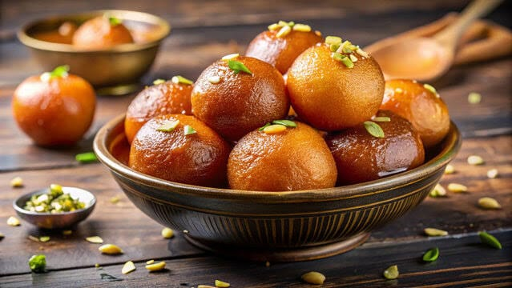
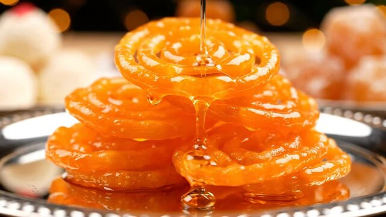

Gulam Jamun
Ingredients
- Sugar
- Bread
- Oil
Recipe
- Mix khoya, flour, and a little baking soda to make a soft dough.
- Make small balls from the dough and deep-fry them until golden brown.
- Prepare sugar syrup with water and add a little cardamom.
- Put the fried gulab jamuns in the syrup and let them soak for a few hours.

Jalebi
Ingredients
- Sugar
- refined flour
- Oil
Recipe
- Mix refined flour with water and make a smooth, thick batter.
- Pour the batter into a piping bag and make spiral shapes in hot oil.
- Fry the jalebis until they become crispy and golden.
- Dip the fried jalebis in warm sugar syrup and serve hot.
